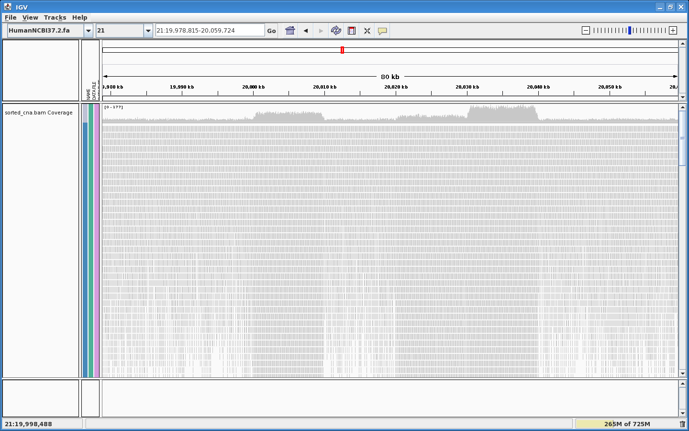

Introduction
We describe here the use of applyCopyNumber.pl, a tool to generate a VCF file with tandem duplications to simulate copy number variations.
If you haven't done it yet, you may refer to the EAGLE - Installation and configuration instructions.
EAGLE for Copy Number Analysis, by example
In this example we show how to simulate a few Copy Numbers on Human chr21.
We made it haploid for simplicity, and we also didn't use any variants.
If you want to add your own variants, the first occurrence of None.vcf may be replaced by the variants that you want replicated on every "allele", while the 2nd None.vcf may be replaced by the variants that you only want on one allele at a time.
Generate an intermediate Sample Reference:
source /illumina/development/EAGLE/stable-setup configureEAGLE.pl \ --run-info=$EAGLE_SHARE/RunInfo/RunInfo_PairedReadsBarcode8x32Tiles.xml \ --reference-genome=/illumina/scratch/iGenomes/Homo_sapiens/UCSC/hg19/Sequence/Chromosomes/chr21.fa \ --variant-list=$EAGLE_SHARE/Variants/None.vcf \ --coverage-depth=30 \ EAGLE_CNA_intermediate cd EAGLE_CNA_intermediate make sample cd ..
Create the following tab-separated CN.tab file:
#CHR FIRST_POS LAST_POS COPY_NUMBER chr21 20000000 20010000 3 chr21 20020000 20030000 2 chr21 20030001 20040000 5 chr21 20040001 20050000 1 chr21 20050001 20060000 0
Note that the chromosome names above need to refer to the sample genome e.g. in most cases you will have to write something like chr21_allele1 or chr21_allele2.
Run:
$EAGLE_LIBEXEC/applyCopyNumber.pl --copy-number=CN.tab --vcf=CN.vcf
This generates the file CN.vcf.
Now we are using this new VCF file as a source to generate the real, final, simulation.
We need to add the special ploidy definitions:
configureEAGLE.pl \ --run-info=$EAGLE_SHARE/RunInfo/RunInfo_PairedReadsBarcode8x32Tiles.xml \ --reference-genome=EAGLE_CNA_intermediate/sample_genome \ --variant-list=CN.vcf \ --coverage-depth=30 \ EAGLE_CNA
Note that we are taking into account that there is 1 copy already coming from the original reference, which needs to be subtracted from the --ploidy-level parameters.
Now we can complete the simulation:
cd EAGLE_CNA make -j 8
Results
After CASAVA alignment (process described in EAGLE Use Case - Interfacing EAGLE with CASAVA), we can admire our Copy Numbers in IGV:

{kind=link}